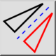

สะท้อน
แถบเครื่องมือ / ไอคอน:


เมนู: แก้ไข > สะท้อน
ทางลัด: M, I
คำสั่ง: mirror | mi
คำอธิบาย
สะท้อนเอนทิตีไปตามแกนที่กำหนด
การใช้งาน
- เลือกเอนทิตีที่คุณต้องการสะท้อน
- เริ่มเครื่องมือนี้
- ระบุจุดแรกบนแกนสะท้อนด้วยเมาส์หรือป้อนพิกัดในบรรทัดคำสั่ง
- ระบุจุดที่สองบนแกนสะท้อน
- กล่องโต้ตอบสะท้อนจะแสดงขึ้น หากต้องการสะท้อนเอนทิตีโดยไม่เก็บเอนทิตีเดิม ให้เลือก „Delete Original" หากต้องการคัดลอก ให้เลือก „Keep Original" เอนทิตีใหม่จะถูกวางบนเลเยอร์เดียวกันกับเอนทิตีเดิมและมีแอตทริบิวต์เดียวกัน หากต้องการใช้เลเยอร์ปัจจุบันและแอตทริบิวต์ปัจจุบันแทน ให้ทำเครื่องหมาย „Use current layer and attributes"
- คลิก „OK" เพื่อสะท้อนเอนทิตี